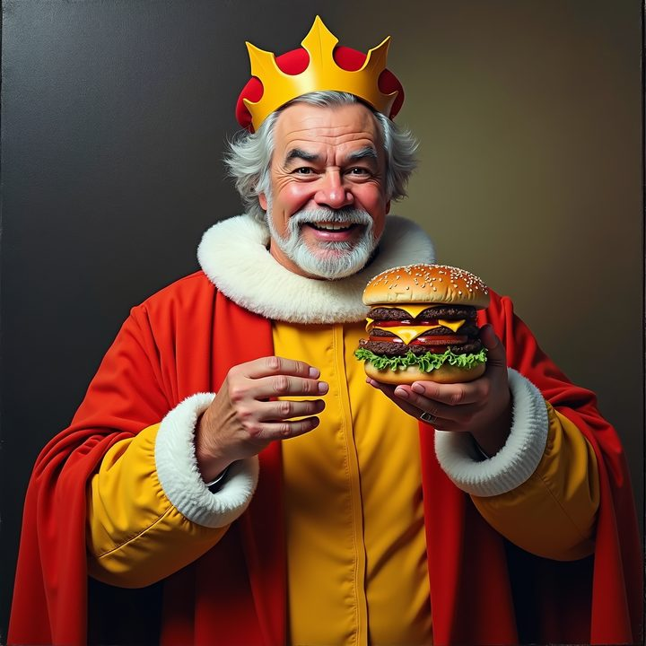
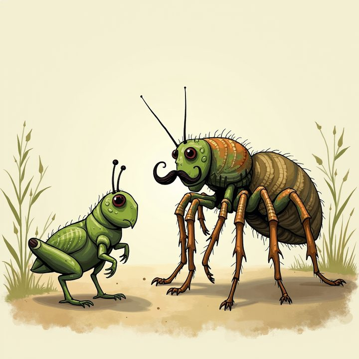

RTX 4090 benchmark completed across text-to-image, editing, and video.
Native DiT runtime
edge-dit.cpp
A lightweight C/C++ inference engine for efficient Diffusion Transformer inference on local and resource-constrained devices. No Python, no PyTorch at runtime — just ggml.
shell
# build (CUDA, NCCL + MPI on by default) $ git clone --recursive https://github.com/THU-MIG/edge-dit.cpp $ bash ./scripts/build_cuda.sh # generate an image $ ed-cli --diffusion-model flux1-dev -p "a spartan warrior" -o out.png
- Runtime
- C / C++ on ggml
- Backends
- CUDA, CPU, Vulkan, Metal
- Workloads
- Image, edit, video
- Status
- v0.1.0-alpha preview
Showcase
Generated on this engine
Unretouched outputs straight from the benchmark suite. Every image was
produced by ed-cli on the models below — captions are the exact
prompts.


Latest news
What changed most recently
These notes mirror the current README.md timeline and
help the homepage feel alive instead of frozen in time.
Per-component offload landed with unified semantics for the offload path.
--auto-fit added for automatic quantization and placement under a VRAM cap.
Few-step distilled auto-detection and optional SageAttention support were added.
ed-convert brought offline GGUF quantization with activation-calibrated imatrix.
Project snapshot
What the runtime looks like in practice
The console screenshot shows the local web UI that rides on top of the same core engine, server, and job flow the rest of the project uses.

Why the project feels coherent
- One core engine powers the C API, CLI, native server, Python bindings, and Python server console.
- Model loading, memory placement, quantization, and device selection are explicit rather than hidden.
- Few-step distilled checkpoints are detected automatically and get a shorter default schedule.
- Image generation, image editing, and video generation share the same native foundation.
Capabilities
Core strengths at a glance
The page is intentionally compact. The point is to show the project clearly, not to bury it under decorative layers.
Native runtime
Pure C/C++ inference on ggml with no Python or PyTorch required at runtime.
Memory control
--auto-fit, layered offload, per-component offload, and VAE tiling help the engine fit tight VRAM budgets.
Backend spread
CUDA is the first-class path, with CPU, Vulkan, and Metal support for other setups.
Unified surfaces
The same model stack can be reached through the C API, CLI, native server, Python bindings, and Python server.
Interfaces
Public entry points
These are the integration surfaces that matter when you want to script, embed, or expose the runtime through a local service.
| Surface | Entry point | What it gives you |
|---|---|---|
| CLI | ed-cli, ed-sample |
Direct command-line generation and inspection. |
| C API | include/edge-dit.h |
Embed the engine in native C or C++ applications. |
| Native server | ed-server |
A small HTTP wrapper around the core runtime. |
| Python bindings | edge_dit |
Drive the engine from Python with the same model stack. |
| Python server console | React UI + runtime manager | Browser-based local control for jobs, logs, and result viewing. |
Model scope
Supported families
The homepage keeps the list short and readable, while the repository docs carry the exact checkpoints, formats, and model-specific caveats.
| Family | Task | Current status |
|---|---|---|
| SD3 / SD3.5 | Text-to-image | Supported |
| FLUX.1 | Text-to-image | Supported |
| FLUX.1-Kontext | Image editing / reference-guided generation | Supported |
| Qwen-Image | Text-to-image | Supported |
| Qwen-Image-Edit | Image editing | Supported |
| Wan 2.1 | Video generation | Supported, still being optimized on Vulkan |
Performance
Published benchmark snapshots
The numbers below are the most visible cross-system snapshots from the current benchmark notes in the repository.
RTX 4090 snapshot
and published in performance-4090.md
| Model | edge-dit.cpp result |
|---|---|
| FLUX.1-dev | 10,569 ms sampling, 19,112 MiB peak VRAM |
| SD3 Medium | 3,434 ms sampling, 9,147 MiB peak VRAM |
| FLUX.1-Kontext | 24,534 ms sampling, 20,111 MiB peak VRAM |
| Wan2.1-T2V-1.3B | 53,964 ms sampling, 12,176 MiB peak VRAM |
H200 snapshot
Measured on and published in performance-H200.md
| Model | edge-dit.cpp result |
|---|---|
| FLUX.1-dev | 6.645 s load, 10.784 s median |
| Stable Diffusion 3 Medium | 5.840 s load, 4.003 s median |
| Qwen-Image | 11.621 s load, 10.697 s median |
Documentation
Jump into the repo without hunting around
These links mirror the parts of the repository people usually want first: build instructions, model scope, CLI usage, API details, and benchmark notes.
Build
Setup, backends, dependency notes, and common build failures.
Models
Supported families, formats, distilled variants, and limitations.
CLI
Command-line examples for text-to-image, editing, and video.
API
C API, native server, Python bindings, and Python server surfaces.
Benchmarks
4090 and H200 performance notes with speed and VRAM tables.